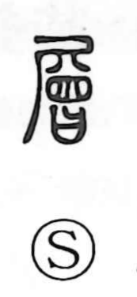

層

Uncategorized
Kun: | On: sou
layer ・ stratum
Explanation
A phono-semantic character: the phonetic element is 曾, here written with 會, whose ancient form depicts a koshiki steamer—a vessel built in tiers, with baskets of food stacked above a pot of boiling water so that steam rises through them. From this image of containers piled one atop another comes the idea of things lying in layers, giving the meanings “layer” and “stratum,” as in cloud banks and geological strata.